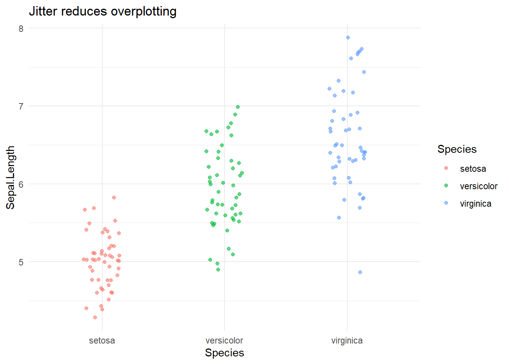
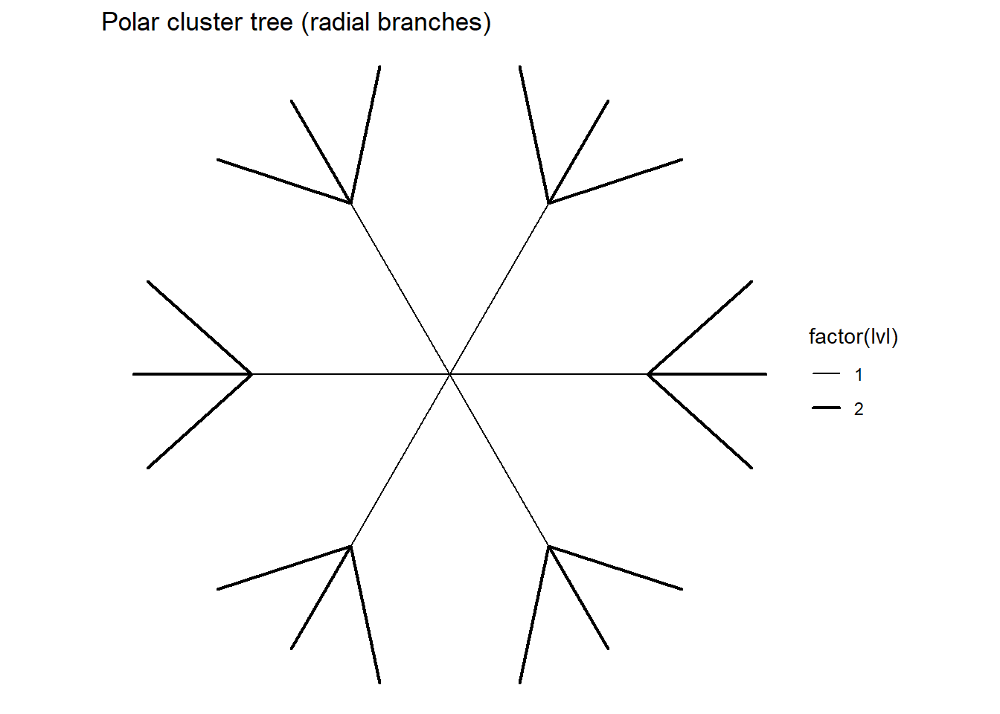

Code
library(ggplot2)
library(dplyr)
ggplot(iris, aes(Sepal.Length, Sepal.Width, colour = Species)) +
geom_point(alpha = 0.8) +
labs(title = "Points: Iris Sepals", x = "Sepal Length", y = "Sepal Width") +
theme_minimal()These study notes explore the structural backbone of data graphics: geometry (the shapes we draw) and coordinate systems (the spaces we draw them in).
Geometry answers what kind of object is this? — point, line, area, path, partition, network.
Coordinates answer where does it live? — on a flat Cartesian plane, a circle (polar), a triangle (barycentric), or a globe (map projections).
Together, they control what the data looks like and, crucially, what your audience can perceive and compare.
This document picks out and explains pertinent aspects from Chapter 8 and 9 of the grammar of graphics, using ggplot to showcase the concepts. It should give you the foundational understanding that you need to engage with and assimilate charts with complex geometry. With practice, you will begin to create complex charts of your own.
Reading aim: By the end, you should be able to name the geometry in any chart, describe its coordinate system, explain the transformation used (if any), and reproduce a minimal version in R/ggplot2.
Idea: A point represents an observation positioned by two (or more) variables. Points are the atoms of scatterplots.
When to use: Comparing two continuous variables; detecting clustering, outliers, or functional relationships.
Key aesthetics: x, y, optional colour, shape, size, alpha.
library(ggplot2)
library(dplyr)
ggplot(iris, aes(Sepal.Length, Sepal.Width, colour = Species)) +
geom_point(alpha = 0.8) +
labs(title = "Points: Iris Sepals", x = "Sepal Length", y = "Sepal Width") +
theme_minimal()Jitter for overlap:
ggplot(iris, aes(Species, Sepal.Length, colour = Species)) +
geom_jitter(width = 0.15, alpha = 0.6) +
labs(title = "Jitter reduces overplotting") +
theme_minimal()
Idea: Lines connect ordered points — either by x order (time series) or by group path (trajectories).
When to use: Time trends; cumulative processes; ordered sequences.
Key aesthetics: x, y, optional group, linetype, colour.
# Economics time series (built-in dataset)
pp <- ggplot(economics, aes(date, unemploy)) + theme_minimal()
pp + geom_line() + labs(title = "Line: US Unemployment (1967–2015)", y = "Unemployed (thousands)")Multiple groups:
# Rolling mean lines by mpg class
library(zoo)
mpg_smooth <- mpg %>% group_by(class) %>%
arrange(displ) %>%
mutate(cty_roll = rollmean(cty, k = 5, fill = NA, align = "center"))
ggplot(mpg_smooth, aes(displ, cty_roll, colour = class)) +
geom_line(na.rm = TRUE) +
labs(title = "Lines by group (smoothed)", x = "Engine displacement", y = "City MPG (5-pt mean)") +
theme_minimal()Idea: Areas are filled regions: bars, ribbons, density bands, or surfaces rendered as colour/contours. In static 2‑D graphics, “3‑D” is conveyed by mapping the 3rd variable (z) to fill or contours.
When to use: Accumulation over a baseline; uncertainty bands; representing a surface z = f(x, y).
# Area under a line (ribbon)
set.seed(1)
dat <- data.frame(x = 1:100) |> mutate(y = cumsum(rnorm(100)))
ggplot(dat, aes(x, y)) +
geom_area(alpha = 0.35) +
geom_line() +
labs(title = "Area: Accumulation under a curve") +
theme_minimal()Surface as raster + contours (quasi‑3D):
In ggplot, a raster is essentially a grid of rectangular tiles, one per cell of your matrix/data grid, each filled with a colour representing the z‑value. Unlike drawing each tile as a full polygon, geom_raster() is optimised for speed: it maps each (x,y) to a pixel‑like rectangle.
A contour is different: ggplot calculates lines of equal z‑value across the surface and then draws them as vector paths. So the raster encodes values by filled cells, while the contour encodes values by isolines.
# volcano is a built-in matrix of elevations
v <- volcano
vdf <- reshape2::melt(v, varnames = c("x","y"), value.name = "z")
ggplot(vdf, aes(x, y, fill = z)) +
geom_raster() +
geom_contour(aes(z = z), colour = "white", alpha = 0.6) +
coord_fixed() +
labs(title = "Surface as area (fill) with contours", fill = "Elevation") +
theme_minimal()Note: True 3‑D geometry (with perspective depth) is beyond base ggplot2; instead we encode the third dimension in colour, contours, or facets.
Idea: A path is a line where order matters but x is not necessarily increasing (e.g., trajectories, cyclic movement).
# Lissajous-like path
n <- 1000
path <- data.frame(t = seq(0, 2*pi, length.out = n)) |>
mutate(x = sin(3*t), y = sin(4*t))
ggplot(path, aes(x, y)) +
geom_path(linewidth = 0.6) +
coord_equal() +
labs(title = "Path geometry: ordered trajectory") +
theme_minimal()Idea: Tukey’s boxplot is a schema geometry: a composite object encoding a distribution (median, quartiles, whiskers, outliers). A contour map is a schema for a surface — lines of equal value.
Classical boxplot:
ggplot(iris, aes(Species, Sepal.Length, fill = Species)) +
geom_boxplot(width = 0.6, outlier.alpha = 0.6) +
labs(title = "Tukey's Schematic Plot (Boxplot)") +
guides(fill = "none") +
theme_minimal()Contour as distribution schema (2‑D density):
Imagine a regular boxplot, which draws a simple rectangle around the middle 50% of a one-dimensional variable — it’s like placing a cardboard box over the densest part of the data. Now, picture that idea extended into two dimensions. Instead of a box, you get gently curving lines — like topographic rings — that trace around the densest clusters of data points. These are your contours. Each one wraps around a set percentage of the data, much like the boxplot fences do, but now smoothly flowing in all directions instead of slicing along fixed x and y axes. It’s like a heatmap with soft edges, where the heat lines follow the shape of the data cloud rather than forcing it into a square.
# 2-D density contours provide a schematic of a bivariate distribution
ggplot(iris, aes(Sepal.Length, Sepal.Width, colour = Species)) +
stat_density_2d() +
geom_point(alpha = 0.4) +
labs(title = "Contour schema: lines of equal bivariate density") +
theme_minimal()How they “check out”: the boxplot summarises 1‑D distribution via quantiles; density contours summarise 2‑D distribution via level sets. Both are compact, assumption‑light summaries.
Idea: Partitions divide space into meaningful regions.
# Simple polygons: tiles on a grid
pg <- expand.grid(x = 1:10, y = 1:6)
pg$z <- with(pg, (x - 5.5)^2 + (y - 3.5)^2)
ggplot(pg, aes(x, y, fill = z)) +
geom_tile(colour = "grey90") +
coord_equal() +
labs(title = "Partition by polygons (tiles)", fill = "Value") +
theme_minimal()# Contours revisited on a smooth function
f <- function(x, y) sin(x) * cos(y)
xy <- expand.grid(x = seq(-pi, pi, length.out = 200),
y = seq(-pi, pi, length.out = 200))
xy$z <- with(xy, f(x, y))
ggplot(xy, aes(x, y)) +
geom_contour(aes(z = z)) +
coord_equal() +
labs(title = "Partition by contours: level sets of z = sin(x)cos(y)") +
theme_minimal()Idea: Networks connect entities (nodes) by relations (edges). For example, imagine a data scientist has developed a model to optimise the London Underground schedule. To explain how traffic flows between stations in this model, they might visualise the underground as a network graph: each station is a node, each rail connection is an edge.
In ggplot2, we can sketch such transit networks using geom_segment() to draw the tracks (edges) and geom_point() to highlight the stations (nodes). The structure can even be laid out to mimic the general shape of the real Tube map using manually defined x and y positions for stations. This allows viewers to quickly grasp the overall flow, identify hubs, and see where congestion might build up.
# Stylised metro-like network
stations <- data.frame(
id = c("A", "B", "C", "D", "E", "F", "G", "H"),
x = c(0, 1, 2, 3, 2, 1, 0, 1),
y = c(0, 0, 0, 0, 1, 1, 1, 2)
)
tracks <- data.frame(
from = c("A", "B", "C", "D", "C", "B", "F", "G", "F", "H"),
to = c("B", "C", "D", "E", "E", "F", "E", "F", "H", "E")
)
tracks <- tracks |>
left_join(stations, by = c("from" = "id")) |>
rename(x = x, y = y) |>
left_join(stations, by = c("to" = "id"), suffix = c("_from","_to"))
ggplot() +
geom_segment(data = tracks, aes(x = x_from, y = y_from, xend = x_to, yend = y_to),
linewidth = 1.2, colour = "steelblue") +
geom_point(data = stations, aes(x, y), size = 4, colour = "black") +
geom_text(data = stations, aes(x, y, label = id), vjust = -1, fontface = "bold") +
coord_equal() +
labs(title = "Stylised Metro Network (Nodes and Lines)") +
theme_void()The real estate available for plotting is always limited. Whether you’re preparing a dashboard, a research graphic, or a poster figure, the space in which data must be drawn is tiny compared to the size of the underlying dataset. This introduces a practical problem: collision.
A collision occurs when two or more data points occupy the same or nearly the same visual position in a plot, making it difficult or impossible to distinguish them. It can distort the reader’s perception — hiding overlaps, misrepresenting counts, or exaggerating the apparent smoothness or density of data.
To solve this, ggplot2 provides collision modifiers — visual strategies that reposition, separate, or spread out graphical elements while keeping the data intact:
Choosing the right modifier is a design decision: each comes with trade-offs in clarity, accuracy, and space efficiency.
# Stack (parts of whole) and Dodge (side-by-side)
ggplot(mpg, aes(class, fill = drv)) +
geom_bar(position = "stack") +
labs(title = "Stacked counts by class and drive") + theme_minimal()
ggplot(mpg, aes(class, fill = drv)) +
geom_bar(position = position_dodge(width = 0.8)) +
labs(title = "Dodged counts by class and drive") + theme_minimal()# Jitter (with transparency)
ggplot(iris, aes(Species, Petal.Length, colour = Species)) +
geom_jitter(width = 0.12, alpha = 0.5) +
labs(title = "Jittered points to reduce overlap") +
theme_minimal()
In any graphic, coordinates define the space in which your data lives — and understanding that space is essential for drawing, interpreting, and even cleaning up your plots. Coordinate systems aren’t just for mathematicians — they shape how we perceive distance, direction, size, angle, and position.
In practical terms: getting your coordinates right means your plots make sense. Getting them wrong — or not understanding how they’re transformed — can make your visualisation misleading or unreadable.
Consider a situation where a field dataset is recorded using different units or orientations (e.g. rotated drone images, mirrored sensors). If you understand isometries like rotation, reflection, and translation, you can adjust or correct your data at the data stage, so that your visualisation requires less fiddling. Likewise, if your data needs to be rotated 90°, would you rather manually adjust your axis labels in ggplot — or just apply a matrix transform to your dataset once?
Similarly, knowing the difference between an affine transformation and a projection helps you interpret what the plot is really saying. Did the distortion come from the data itself? Or was it introduced by the coordinate system?
For example, consider the Mercator projection — a popular map projection used in web mapping tools. It preserves local angles (conformal), which is helpful for navigation, but dramatically distorts area, especially near the poles. This means that Greenland may appear nearly as large as Africa, even though Africa is over 14 times larger in reality. Such distortions aren’t just technicalities — they influence how we perceive geopolitical or demographic weight.
As a data scientist or designer, your choice of coordinate system and projection carries weight: it can either clarify or mislead. Being judicious with projections isn’t just about technical accuracy — it’s about ethical and perceptual responsibility.
This section builds your fluency with transformations — so you can reason about visual space, interpret graphical distortions, and intervene early (in your pipeline) when the coordinate context isn’t clean.
Isometries preserve distances and shapes. They move objects without stretching.
“Reflection and rotation exchange range and domain” — in practice, a 90° rotation swaps axes roles; reflecting across the line y = x is equivalent to exchanging x and y.
# Start with points on a circle
th <- seq(0, 2*pi, length.out = 200)
base <- data.frame(x = cos(th), y = sin(th))
# Define transforms
rotate <- function(df, theta){
R <- matrix(c(cos(theta), -sin(theta), sin(theta), cos(theta)), 2, 2)
as.data.frame(as.matrix(df) %*% R) |> setNames(c("x","y"))
}
translate <- function(df, dx, dy){ transform(df, x = x + dx, y = y + dy) }
reflect_xy <- function(df){ df[, c("y","x")] |> setNames(c("x","y")) }
b_rot <- rotate(base, pi/2)
b_ref <- reflect_xy(base)
b_trn <- translate(base, 1.2, 0.4)
library(tidyr)
base$which <- "base"
b_rot$which <- "rot90"
b_ref$which <- "reflect y=x"
b_trn$which <- "+(1.2,0.4)"
all <- bind_rows(base, b_rot, b_ref, b_trn)
ggplot(all, aes(x, y, colour = which)) +
geom_path() + coord_equal() +
labs(title = "Isometries: translation, rotation, reflection (distance preserved)") +
theme_minimal()Similarity transformations preserve shape but not size (uniform scaling).
Affine transformations are the most general linear transforms + translation (include scaling, rotation, reflection, shear).
Why care? Aspect ratio choices and shears can change the apparent relationship.
# Affine shear example: y' = y + 0.6x
A <- matrix(c(1, 0.6, 0, 1), 2, 2) # shear in y by x
S <- as.data.frame(as.matrix(base[,c("x","y")]) %*% A) |> setNames(c("x","y"))
S$which <- "shear"
bind_rows(base, S) |> mutate(which = ifelse(is.na(which), "base", which)) |>
ggplot(aes(x, y, colour = which)) +
geom_path() + coord_equal() +
labs(title = "Affine shear distorts angles, not straightness") +
theme_minimal()Affine maps keep straight lines straight and parallel lines parallel, but do not preserve angles or lengths. Similarities are affine maps that keep angles (but scale lengths).
Projection maps a higher/larger space onto a plane. We use projections to flatten surfaces (e.g., Earth) or to view high‑dimensional data.
Illustration (perspective feel via affine trick):
tri <- data.frame(x = c(0, 1, 0.5, 0), y = c(0, 0, 0.866, 0))
P <- matrix(c(1, 0, 0.4, 1), 2, 2) # skew to suggest depth
tri2 <- as.data.frame(as.matrix(tri[,c("x","y")]) %*% P); names(tri2) <- c("x","y")
tri$which <- "planar"; tri2$which <- "projected"
bind_rows(tri, tri2) |>
ggplot(aes(x, y, group = which, fill = which)) +
geom_polygon(alpha = 0.5, colour = "grey30") + coord_equal() +
labs(title = "Projection idea on the plane (toy affine 'perspective')") +
theme_minimal()True conformal maps require analytic functions; in data viz we usually call into map projection utilities rather than hand‑coding them.
Polar coordinates often feel unintuitive at first, especially if you’re used to thinking in straight lines and grids. But they are more common in everyday data visualisation than most people realise.
In a polar coordinate system, a point is defined not by how far it runs along the x and y axes, but by how far it is from the origin (radius r) and in which direction (angle θ). This is powerful whenever you’re dealing with cyclical phenomena (e.g. time of day, compass directions, phases, cycles).
Familiar examples include:
Because polar charts wrap around a circle, they make efficient use of space for comparing part-to-whole relationships or highlighting symmetry. But they can also distort perception — especially for area and angle — so they must be used with care. Understanding how they work is essential for interpreting common charts and avoiding misleading design choices. Polar coordinates re‑express points by radius r and angle θ.
Pie/Rose chart:
# Category parts-of-whole in polar
p1 <- ggplot(mpg, aes(x = 1, fill = class)) +
geom_bar(width = 1) + coord_polar(theta = "y") +
theme_void() + guides(fill = guide_legend(title = "Class")) +
labs(title = "Pie (rose) via coord_polar")
p1Polar cluster tree (radial branches):
# Build a simple radial tree using angles
set.seed(2)
levels <- 3
branches <- data.frame()
angle <- seq(0, 2*pi, length.out = 7)[-7]
for (a in angle){
# trunk
branches <- rbind(branches, data.frame(x = 0, y = 0, xend = cos(a), yend = sin(a), lvl=1))
# second level
for (k in c(-0.3, 0, 0.3)){
a2 <- a + k
branches <- rbind(branches,
data.frame(x = cos(a), y = sin(a), xend = 1.6*cos(a2), yend = 1.6*sin(a2), lvl=2))
}
}
ggplot(branches, aes(x, y, xend = xend, yend = yend, linewidth = factor(lvl))) +
geom_segment(lineend = "round") + coord_equal() +
theme_void() + scale_linewidth_discrete(range = c(0.4, 0.8)) +
labs(title = "Polar cluster tree (radial branches)")
Spider/Radar plot:
# Create a radar/spider from wide -> long
rad <- data.frame(group = c("A","B"), speed = c(7,5), power = c(4,8), agility = c(6,7), stamina = c(8,6))
rad_long <- tidyr::pivot_longer(rad, -group, names_to = "metric", values_to = "value")
# Put metrics around a circle
rad_long$metric <- factor(rad_long$metric, levels = unique(rad_long$metric))
# Close the polygons by repeating the first metric at the end
rad_closed <- rad_long |>
group_by(group) |>
arrange(metric, .by_group = TRUE) |>
tidyr::complete(metric, fill = list(value = NA)) |>
mutate(value = zoo::na.locf(value, na.rm = FALSE)) |>
tidyr::drop_na() |>
bind_rows(rad_long |> group_by(group) |> slice(1))
# Angular position
ang <- data.frame(metric = levels(rad_long$metric), theta = seq(0, 2*pi, length.out = length(levels(rad_long$metric)) + 1)[-1])
rad_plot <- rad_long |> left_join(ang, by = "metric")
# Draw in polar via coord_polar
p_spider <- ggplot(rad_long, aes(metric, value, group = group, colour = group, fill = group)) +
geom_point(size = 2) +
geom_polygon(alpha = 0.2) +
coord_polar() +
labs(title = "Spider/Radar in ggplot (coord_polar)") + theme_minimal()
p_spiderConcept: When we want to represent a three-dimensional scene on a two-dimensional page or screen, we have to reduce dimensionality. This can be done by simply ignoring one axis (called an orthographic projection), or by simulating how things appear smaller as they move further away (known as perspective projection, where vanishing points come into play).
In static 2D plotting — like most ggplot graphics — we can’t create true 3D visuals. But we can simulate depth by using visual cues such as shrinking point sizes, fading opacity (alpha), or applying skewing transformations that suggest distance. These tricks mimic perspective and give the illusion of 3D depth without needing interactive or rotating graphics.
# Point cloud with depth mapped to size/alpha (fake perspective)
set.seed(3)
xyz <- data.frame(x = rnorm(500), y = rnorm(500), z = rnorm(500))
ggplot(xyz, aes(x, y)) +
geom_point(aes(size = scales::rescale(-z), alpha = scales::rescale(-z))) +
scale_alpha(range = c(0.2, 0.9), guide = "none") +
labs(title = "Perspective feel via size/alpha depth cue") + theme_minimal()Barycentric or triangular coordinates are ideal when you want to visualise the relative contributions of three components that always sum to a fixed total — typically 1 (or 100%). These components are often proportions or percentages of a mixture, composition, or blend.
This kind of chart is especially useful in compositional data analysis, where we care more about the relative shares of components than their absolute quantities. Because all three parts must add up to the same total, standard Cartesian plots fail to represent them faithfully — but a triangle can!
Common real-world examples include:
Ternary plots let you locate any composition within a triangle, where each vertex represents 100% of one component. Points near a vertex indicate dominance of that component. Points near an edge show a mix of two, and points in the centre are balanced blends.
Implementation note: The ggtern package extends ggplot2 with full support for ternary plots. If unavailable, we can simulate barycentric mapping manually by converting A+B+C=1 compositions into 2D (x, y) triangle coordinates. Idea: For 3‑part compositions that sum to 1 (or 100%):
(A, B, C). Soil texture (sand, silt, clay) is a classic example.
Implementation note: The ggtern extension adds ternary coordinates to ggplot. If not available, you can still demonstrate barycentric logic by constraining A+B+C=1 and drawing a filled triangle with
geom_polygon.
# Using ggtern (if installed)
# install.packages("ggtern")
# library(ggtern)
# comp <- data.frame(A = runif(200), B = runif(200)) |> mutate(C = pmax(0, 1 - A - B)) |> filter(A+B+C >= 0.999)
# ggtern(comp, aes(A, B, C)) + geom_point(alpha = 0.6) + theme_bw() + labs(title = "Barycentric (ternary) coordinates")Fallback demo (no ggtern):
tri <- data.frame(x = c(0, 1, 0.5), y = c(0, 0, sqrt(3)/2))
comp <- data.frame(A = runif(300), B = runif(300)) |>
mutate(C = pmax(0, 1 - A - B)) |>
filter(A + B + C > 0.999)
# Convert (A,B,C) to triangle (x,y)
ABC_to_xy <- function(A, B, C){
# vertices: A=(0,0), B=(1,0), C=(0.5, sqrt(3)/2)
x <- A*0 + B*1 + C*0.5
y <- A*0 + B*0 + C*sqrt(3)/2
data.frame(x, y)
}
xy <- ABC_to_xy(comp$A, comp$B, comp$C)
ggplot() +
geom_polygon(data = tri, aes(x, y), fill = NA, colour = "grey40") +
geom_point(data = xy, aes(x, y), alpha = 0.5) +
coord_equal() + theme_minimal() +
labs(title = "Barycentric demo without ggtern")Map projections are a powerful — and sometimes dangerous — way of transforming the 3D globe onto a 2D surface. Because it’s mathematically impossible to preserve all geographic properties when flattening a sphere, projections involve trade-offs. Some preserve area, others preserve shape, distance, or direction — but never all four.
This matters because map projections can strongly influence how we perceive space, scale, and importance. For instance, the Mercator projection — widely used in online mapping — makes Greenland appear almost the same size as Africa, when in reality Africa is over 14 times larger. Such distortions can lead to unconscious biases about geopolitical size and relevance.
Different projections suit different purposes:
Understanding projections helps you avoid misleading your audience — and helps you choose a layout that matches your data story.
Below are two simple examples: one using Mercator-like scaling and another using a fixed aspect ratio that reduces distortion. For polar data (e.g., sea ice extent or polar bird migration), an azimuthal projection would be more appropriate, and can be rendered using sf + CRS codes (e.g., EPSG:3031 for the South Pole).
library(maps)
world <- map_data("world")
# Mercator-like default (conformal near equator)
merc <- ggplot(world, aes(long, lat, group = group)) +
geom_polygon(fill = "grey85", colour = "white", linewidth = 0.2) +
coord_quickmap() +
theme_void() + labs(title = "World map (quick map, Mercator-ish)")
# Pseudo equal-area look using aspect
aea <- ggplot(world, aes(long, lat, group = group)) +
geom_polygon(fill = "grey85", colour = "white", linewidth = 0.2) +
coord_fixed(1.3) +
theme_void() + labs(title = "World map (fixed aspect)")
mercaea
For serious geographic work, use
sf+coord_sf(crs = ...)to explicitly set projections. Even visual choices have interpretive consequences — be deliberate. Map projections flatten the globe onto a plane; each projection preserves some properties and sacrifices others (area, angle, distance).
Quick world sketch with built‑ins:
library(maps)
world <- map_data("world")
# Mercator-like default (conformal near equator)
merc <- ggplot(world, aes(long, lat, group = group)) +
geom_polygon(fill = "grey85", colour = "white", linewidth = 0.2) +
coord_quickmap() +
theme_void() + labs(title = "World map (quick map, Mercator-ish)")
# Pseudo equal-area look using aspect
aea <- ggplot(world, aes(long, lat, group = group)) +
geom_polygon(fill = "grey85", colour = "white", linewidth = 0.2) +
coord_fixed(1.3) +
theme_void() + labs(title = "World map (fixed aspect)")For rigorous projections and 3‑D coordinate systems (e.g., WGS84 ellipsoid, EPSG codes), use sf +
coord_sf(crs = ...). The pedagogical point: projection choice changes areas, shapes, and distances — interpret with care.
economics line, then sample 12 points per year and compare readability.library(ggplot2)
library(dplyr)
library(lubridate)
# Original line plot
pp <- ggplot(economics, aes(date, unemploy)) +
geom_line(colour = "steelblue") +
labs(title = "US Unemployment (Full Time Series)", y = "Unemployed (thousands)") +
theme_minimal()
# Sampled 12 points per year
eco_sample <- economics |>
mutate(year = year(date)) |>
group_by(year) |>
slice_sample(n = 12) |>
ungroup()
pp_sample <- ggplot(eco_sample, aes(date, unemploy)) +
geom_point(colour = "firebrick", alpha = 0.7) +
labs(title = "US Unemployment (12 Random Points per Year)", y = "Unemployed (thousands)") +
theme_minimal()
# View side by side if using patchwork
library(patchwork)
pp + pp_samplegeom_ribbon 95% CI. Explain why ribbons are better than error bars when values are dense.set.seed(123)
df <- data.frame(x = 1:100, y = cumsum(rnorm(100)))
df$lower <- df$y - 1.96 * 2
df$upper <- df$y + 1.96 * 2
# Ribbon plot showing confidence interval
ggplot(df, aes(x, y)) +
geom_ribbon(aes(ymin = lower, ymax = upper), fill = "skyblue", alpha = 0.3) +
geom_line(colour = "steelblue") +
labs(title = "Mean with 95% CI Ribbon", y = "Value") +
theme_minimal()geom_line() with sorted x destroys the shape.iris, draw per‑species boxplots and bivariate density contours of (Sepal.Length, Sepal.Width). Ask: which questions does each answer?coord_equal, coord_fixed, and aspect ratios. Observe shape distortion.ggtern or the fallback conversion. Interpret a cluster near the A–B edge.maps then compare to an equal‑area projection (if using sf). Which countries “shrink” or “grow”? Why does that matter?Use these to transform data before plotting, or use ggplot’s
coord_*to transform the space.
# Core packages
library(ggplot2)
library(dplyr)
library(tidyr)
library(zoo)
library(maps)
library(reshape2)
# Optional: ggtern, sf if availableAll examples use built‑in datasets (iris, mpg, economics, volcano, maps) to keep labs self‑contained.